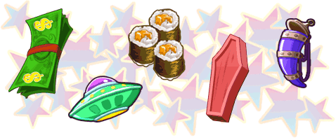

18 |
Ingrédients spéciaux |
 |
 Si vous ne préparez pas la nourriture assez rapidement, les clients se mettront en colère et partiront dans un autre restaurant où l’on s’occupera mieux d’eux. Pour éviter cela, il existe des ingrédients spéciaux qui les calmeront. Pour les garder de bonne humeur, offrez-leur l’un de ces ingrédients.
Vous pouvez acquérir les ingrédients spéciaux en les prenant à la serveuse qui apparaît de temps en temps dans le restaurant. |
 |
 |
 |